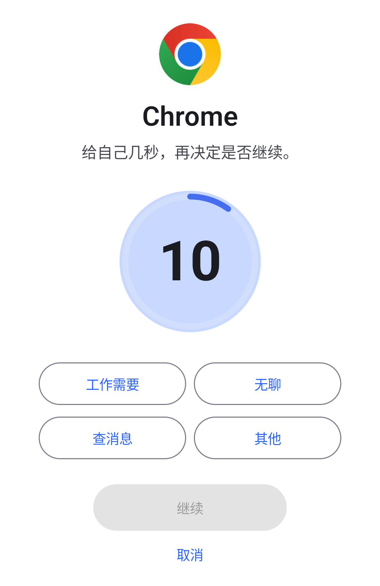
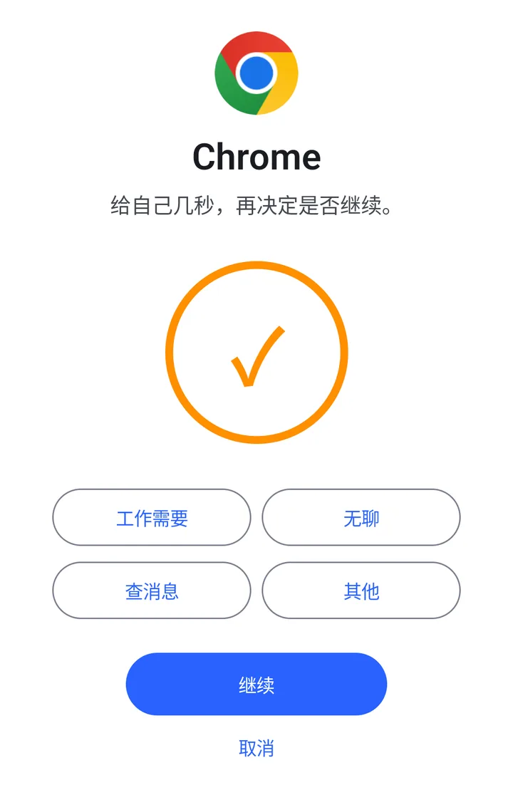
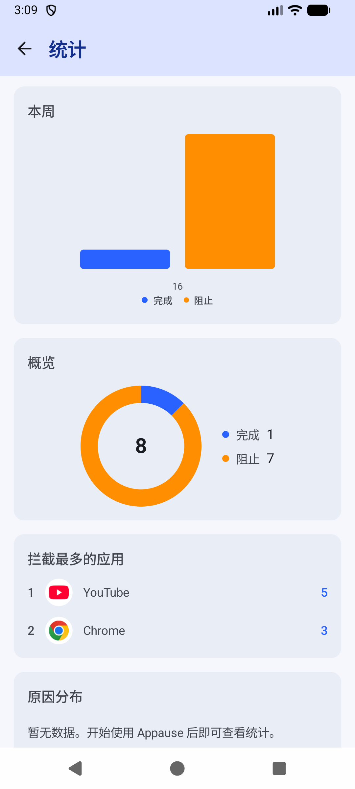

- 点开一个你选过的应用
- 先冷却几秒，可以顺手选个原因
- 继续，或者回桌面
点开应用，先冷却几秒，再决定继续还是回桌面。
演示只等 5 秒，App 里新分组默认10 秒。
示例应用已加入分组，点这里试试
示例应用
给自己几秒，再决定是否继续。
要开哪些权限
按首页提示完成设置，电池和后台设置也建议一起开好。
必须开启
- 无障碍服务
- 识别当前应用并显示暂停页，不读取屏幕文字或聊天内容。没有它，拦截不会生效。
建议一起设置，保持稳定运行
- 电池优化设为「无限制」
- 建议设为「无限制」或「不限制」，减少系统省电时停止后台运行的情况。
- 允许自启动
- 手机有这个开关就建议打开，减少重启或清理后台后拦截失灵的情况。
- 使用情况访问
- 建议开启，帮助确认当前应用，减少切换应用时误弹暂停页。
按需开启
- 显示悬浮窗
- 平时用不到。个别机型不显示暂停页时，再开它作为备用方案。
- 通知
- 安卓 13 及以上的常驻运行状态通知。不开不影响拦截。
日常使用不联网。只有开始试用、兑换授权码或发送反馈时才会联网。分组、冷却设置和统计只存在这台手机上，卸载即清除。完整说明见隐私政策。
你的记录
每次暂停后你选了继续还是取消，都会记一笔，供你自己回看。
- 完成
- 冷却结束后，点「继续」进入应用，记为一次完成。
- 阻止
- 你在暂停页点了取消，回到桌面。
- 打开原因
- 继续时选的原因也会记下。免费可以查看 365 天的记录。
- 临时放行
- 冷却结束后，可以选择让当前应用临时放行 5、15 或 30 分钟，到期后恢复拦截。默认显示此选项，可在设置中隐藏。

免费使用
Pro 先试用 7 天，再申请免费永久授权码，便于收集反馈、持续完善功能。
装上就有
- 拦截、冷却、暂停页和统计，不限时间，也不限次数
- 1 个分组
- 冷却时间 1 到 60 秒，和 Pro 的上限相同
- 365 天的统计记录
- 反馈时附带诊断快照，由你决定是否发送
Pro 额外提供
- 无限分组
- 再次提醒：停留在目标应用时再提醒一次
- 自定义暂停提示语
- 自定义打开原因
- 在 App 的 Pro 页开始 7 天试用，每台设备一次。
- 试用结束后，Pro 的四项功能关闭，已有的分组和统计不受影响。
- 通过 设置 → 反馈 申请免费的永久授权码，回到 Pro 页兑换。一个授权码最多绑定 3 台设备。
常见问题
没找到答案？发邮件至 rng2018520@gmail.com，或在 GitHub 提问。
怎么下载？提取密码是什么？
点击页面上的蓝奏云下载按钮，输入提取密码 1234 即可下载。
安装时提示「不允许安装未知应用」，怎么办？
按提示允许当前浏览器或文件管理器安装，再返回继续。若系统提示具体安全风险，请先停止安装，并把提示截图发给开发者。
无障碍里的 Appause 是灰色的，提示「受限设置」，怎么办？
安卓 13 及以上，从浏览器或文件管理器安装的应用默认不能直接开启无障碍。先在无障碍设置里点一次 Appause 并关掉提示，再打开 设置 → 应用 → Appause，点右上角 ⋮ 选「允许受限设置」，按提示验证后回到无障碍设置开启即可。不同品牌的菜单名称可能略有不同。
无障碍服务能看到什么？为什么一定要开？
用来识别当前应用并显示暂停页，不读取屏幕文字或聊天内容。不开启，拦截就无法生效。
会耗电吗？为什么拦截有时会失灵？
耗电量尚未系统测量。拦截失灵时，先检查无障碍服务、电池「无限制」和自启动设置；仍有问题，可通过 设置 → 反馈 联系开发者。
暂停页会被其他应用挡住吗？
暂停页用的是较高层级的窗口，盖在普通应用之上，实测在开启了「隐藏悬浮窗」的应用上也能看到。个别机型如果仍然不显示，可以开启「显示悬浮窗」权限，Appause 会改用备用方案。
没打开那个应用，为什么也弹出了暂停页？
部分机型上，打开最近任务、切换应用或收到媒体通知时，系统发出的事件很像一次应用切换，偶尔会误弹暂停页。开启「使用情况访问」可以减少这种情况，但不能完全避免。
Pro 要花钱吗？永久授权码怎么申请？
不花钱。先在 Pro 页开始 7 天试用，每台设备一次。试用结束后，通过 设置 → 反馈 申请永久授权码，由开发者手动发放，再回到 Pro 页兑换。一个授权码最多绑定 3 台设备。
怎么更新？换手机后数据还在吗？
下载新版直接覆盖安装，不要先卸载，卸载会清除本机的分组和统计。分组和统计没有云同步，也不能导出，换手机后需要重新设置。
新手机需先在 Pro 页开始并完成 7 天试用，再兑换永久授权码。原授权码最多绑定 3 台设备；还有名额时可以继续使用，若提示设备数量已达上限，请通过「设置 → 反馈」联系开发者处理。
- 文件
- Appause-v0.5.46.apk
- 大小
- 12.3 MB
- 系统要求
- 安卓 8.0 及以上
- 包名
- com.appause.android
- versionCode
- 98
- 账号
- 不需要
核对安装包的 SHA-256
在电脑上算一次下载文件的 SHA-256，和下面这串一致，就说明安装包没有被改动过。从备用渠道下载时尤其值得核对。
ab455551b07503a9c3663e6f88759955251c42dd526888c0c874df53506fb927
Windows 运行 certutil -hashfile <apk> SHA256；macOS 或 Linux 运行 shasum -a 256 <apk>。
受系统限制，目前仅支持安卓。